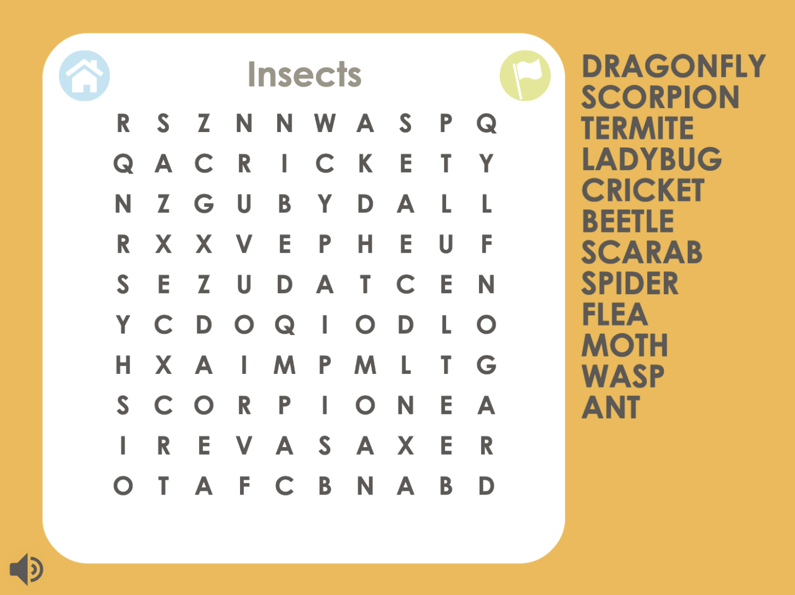

Word Search Online Game Bot
Project Description
This project is a bot to play Cool Math Games' "Word Search" for an indefinite period of time. Once a botting session is initiated, the program begins a new puzzle and solves it in full before moving on to the next generated puzzle. It repeats this process until the user requests an end to the botting session, or the bot fails to complete a puzzle, in which case it triggers an end to the botting session automatically and outputs a notification of the error.
Code available for download on github.
How to Run
To run this project:
* Navigate to
https://www.coolmathgames.com/0-word-search
* Ensure requirements listed in requirements.txt are satisfied
* From within the project folder, run the command
$ python main.py
* Press 'q' after a puzzle is completed to stop the botting session
Note
While this bot was built based on the game's 'Hard' difficulty conditions, it should be equally effective when set for 'Easy', 'Medium', or 'Hard' difficulty. The bot, however, is not designed to solve puzzles in 'Maniac' difficulty due to the added time constraint and hidden word bank.
Update
As of January 2024, this project has been modified to limit the need for hardcoded data by generalizing code to function for any screen dimensions. Therefore, this program should be able to be run on any Windows computer that has the requirements.txt contents fulfilled and can display the full game window clearly while it is running. However, this shift puts some responsibility on the user that was not present previously to follow the instructions printed in the terminal at the start of running the program.
Demo Video
Click here to view the demo video on Youtube.
Development Process
Image Processing and Recognition
First, the program identifies the gamescreen's location on the user's screen and begins the botting session. Once a given puzzle appears, it is saved as an image from which the word bank column and the letter grid are separated into independent images and preprocessed for more accurate recognition. Pytesseract is used to extract data from the images of interest, converting the letter grid into a 2-D array of characters and the word bank into a list of twelve words.
Data Parsing
Next, each word in the word bank is broken into a list of characters that is then compared to the positions of characters in the letter grid. In order to do this, the program iterates over the letter grid, and if the letter at a given position is the same as the first letter of the desired word, it checks in each direction to see if the neighboring characters combine to spell out the desired word. Once the word's location is found in the grid, the row and column indexes of its first and last letter are saved.
Coordinate Conversion
Once the array positions of each word are determined in the letter grid, they are converted into pixel positions on the screen by multiplying the (col, row) values by the width and height of each cell of the letter grid plus one half of the width and height to get to the center point of each cell. These dimensions are determined by dividing the width and height of the grid's image by the number of columns/rows, respectively. Then, the resulting pixel pairs are incremented to account for the distance from the top-left corner of the user's screen to the top-left corner of the letter grid.
Mouse Automation
After the starting and ending pixel coordinates are logged for each word, the program utilizes pyautogui to navigate to the word's starting position, press down the left mouse key, and drag over the word before lifting the mouse key over its finaly position. When a word from the word bank is correctly selected, the game recognizes it as found, and the program proceeds to selecting the next word in the word bank. Once all the words in the word bank have been correctly selected, the puzzle is declared 'Solved', at which time the user has five seconds to press 'q' and terminate the botting session before the 'New Puzzle' button is pressed, and solving process restarts with a new data image.
Problems Encountered
Several major problems arose during the creation of this program, mainly as a reault of the limits of pytesseract.
First of all, even after extensive experimentation with image preprocessing techniques, pytesseract was rarely able to accurately read in every letter of the word search grid. To help lessenthe damage of pytesseract skipping over or interpreting extra letters in the grid, each read-in letter was only added to the grid's data structure if it was identified in the position of an expected cell. If no letter was read-in at the position of an expected cell, an empty char was inserted into its position in the data structure to maintain the letters respective positions to each other. Then, once the data structure was filled, every item in the array listed as an empty char was re-evaluated by running pytesseract exclusively on the cropped region of the grid at that cell position. Any letters that were still undeterminable were left as an empty char in the 2-D array and treated like a "wild" space.
Similarly, although most of the time, pytesseract read in the word bank fully and accurately, it would occassionally stop reading in after the second or third term line for some undetermined reason. Thus, to account for these odd occurrences, the program checks if all twelve words were added to the bank's data structure, and if not, reruns pytesseract under a different configuration to fill the word bank.
Unfortunately, while these solutions improved the accuracy of the data structures, pytesseract would still manage to misinterpret a letter that is added into the 2-D array. If one of these letters happened to be contained in one of the word bank words' positions on the grid, the word would be interpreted by the program as not existing in the grid. Therefore, if a target word is not found in the generated letter grid, the program iterates through each letter of the target word, setting one to an empty char (or a "wild") at a time, until the altered word is found in the letter grid. The thought process behind this band-aid solution is that if a few letters are misinterpreted by pytesseract, it is likely that each word from the word bank will not contain more than one misinterpreted letter. Thus, if the word is not found in the grid, but a word with all but one character being the same is, the latter is likely the missing word and its position in the grid can be interpreted as such.
Shortcomings
There are two identified cases where this program will fail to successfully complete a puzzle:
* Since the band-aid solution noted above assumes only one character in a word had been mistinterpreted, it may fail to find words for which more than one of their characters has been read-in incorrectly. Additionally, if the puzzle does have an instance of a word bank term being off by one letter in the grid, that instance may be falsely noted as the position of the word.
* Since the program searches for the first occurrence it can find of a word bank word, if said word occurs more than once in the puzzle and the game's intended solution for it is not the most upper left instance of the word, the program will attempt to select the wrong instance and the word will not be marked as found.